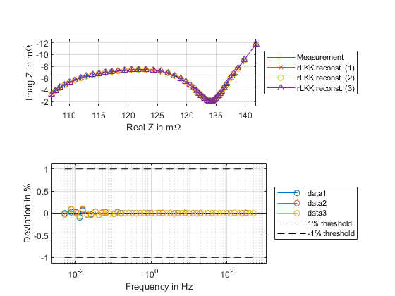

Regularized Linear Kramers Kronig Demonstration file
using function mode
- Documentation: Based on frequency vector 'f' and complex-valued impedance spectrum measurement data 'Z' rLKK reconstruct the "ideal" or "fixed" measurement "Zf"
- Goal:
(1) if Z and Zf's deviation are small: The measurement data's consistency is validated
There is a rule of thumb of 1% or 2% for this
(2) It's possible to use the reconstructed data as "correction" to noise and 'white' distortions (i.e., distortions averaging at 0) This should be done with caution
Contents
Script Mode
clear clf % load impedance spectrum, as "Z" and "f" load Zimp.mat % Z = re + 1j.* im; % f and Z have same length % Using default data (RECOMMENDED) Zf = rLKK(Z,f); % Using specific lambda and DRT frequency, agressive rLKK lambda = 1e10; fx = logspace(-20,20,1000); Zf1 = rLKK(Z,f,lambda,fx); % Using specific lambda and DRT frequency with 1/|Z| weighting, agressive rLKK lambda = 1e10./abs(Z); %using dynamic lambda fx = logspace(-4,8,1000); Zf2 = rLKK(Z,f,lambda,fx); subplot(211) hold on plot(Z*1e3,'+-','DisplayName','Measurement') plot(Zf*1e3,'x-','DisplayName','rLKK reconst. (1)') plot(Zf1*1e3,'o-','DisplayName','rLKK reconst. (2)') plot(Zf2*1e3,'^-','DisplayName','rLKK reconst. (3)') xlabel('Real Z in m\Omega') ylabel('Imag Z in m\Omega') set(gca,'YDir','reverse') axis equal box on grid on legend('Location','eastoutside') subplot(212) hold on Zres = (abs(Zf(:)) - abs(Z(:)))./abs(Zf(:)) * 100; Zres1 = (abs(Zf1(:)) - abs(Z(:)))./abs(Zf1(:)) * 100; Zres2 = (abs(Zf2(:)) - abs(Z(:)))./abs(Zf2(:)) * 100; stem(f,Zres); stem(f,Zres1); stem(f,Zres2); set(gca,'XScale','log') grid on; box on; plot(f,ones(size(f))*1, 'k--', 'DisplayName','1% threshold') plot(f,ones(size(f))*-1, 'k--', 'DisplayName','-1% threshold') % plot(f,ones(size(f))*1, '--', 'DisplayName','2% threshold') % plot(f,ones(size(f))*-1, '--', 'DisplayName','-2% threshold') xlabel('Frequency in Hz') ylabel('Deviation in %') legend('Location','eastoutside') axis('padded')
Further help (Script mode)
- Script mode Use:
- Load Z (complex impedance specturm) and f if you have real and imaginary, construct Z using Z = re + 1j.*im if you have amp and phase, construct Z using Z = amp.*exp(1j.*phase) phase is in radians, if not then phase = phase / 180 * pi;
- The DRT frequency (fx) Configure rLKK_do to match your measurement fx should include the measurement frequency
include infinity frequency in your calculation to avoid "series-resistance" effect (Line 21 in rLKK_do)
- Regularization parameter (lambda) larger lambda = data are less reliable due to noise and distortions Typical values: 10^-1 to 10^-2 (1e-2 - 1e-1) for EIS of batteries
Meta info
Author: Ahmed Yahia Kallel, Measurement and Sensor Technology, Chemnitz Univeristy of Technology
version-rLKK: version 5 (First public release)
version-portal: version 1 (First public release)
Citation:
[Kallel2021] Kallel, Ahmed Yahia, and Olfa Kanoun. "Regularized linear kramers-kronig transform for consistency check of noisy impedance spectra with logarithmic frequency distribution." 2021 International Workshop on Impedance Spectroscopy (IWIS). IEEE, 2021.